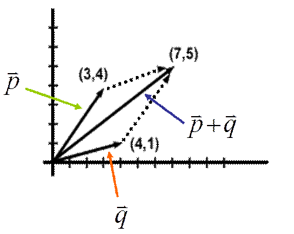

Geometric Vectors
Video| Magnitude-the length of the vector, $|v↖{→}|$ Vector-a quantity, or directed distance, with both direction & magnitude (a directed line segment) $v↖{→}$ Standard Position-when a vector begins at the origin Amplitude-the directed angle betweenthe positive x-axis & the vector |
| Resultant-the sum of 2 or more vectors |  |
| Opposite Vectors-same magnitude & opposite direction Parallel Vectors-same or opposite direction |
 |
| Resultant-the sum of 2 or more vectors |
| Opposite Vectors-same magnitude & opposite direction Parallel Vectors-same or opposite direction |
|
| Find the amplitude to the nearest tenth of a degree $\table \tanθ={opp}/{adj}=y/x; \tanθ=475/520; θ=\tan^{-1}(475/520); θ≈42.4°$ |
| Find the amplitude to the nearest tenth of a degree $\table \tanθ={opp}/{adj}=y/x; \tanθ=475/520; θ=\tan^{-1}(475/520); θ≈42.4°$ |